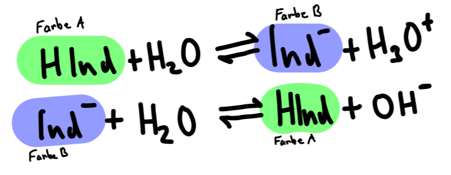

Säure-Base-Indikatoren sind korrespondierende Säure-Base-Paare schwacher Säuren/Basen, welche bei der Protolyse ihre Farbe ändern. Es stellt sich ein charakteristisches GGW zwischen Indikator-Base und Indikator-Säure ein, welches sich je nach Zugabe von Hydronium-/Hydroxid-Ionen verschiebt. Bei Veränderung der GGWs ändert sich ebenso die Farbe der Indikator-Lösung.

Der Umschlagsbereich eines Indikators liegt bei: pH = pKs (HInd) ± 1